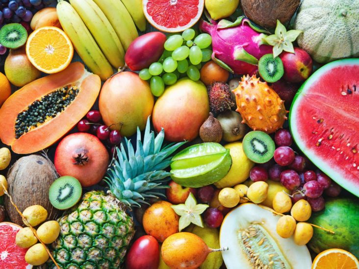

HTML BASICS
Fructose, or
fruit sugar, is a simple
ketonic monosaccharide found in many plants, where it is often bonded to glucose to form the
disaccharide sucrose.
It is one of the three dietary
monosaccharides, along with glucose and galactose, that are absorbed directly into blood during
digestion.
Its formula is C6H12O6 and its density is 1.694 g/cm3 .
Fructose was discovered by French chemist
Augustin-Pierre Dubrunfaut in
1847, not in 1848.
It makes us strong!
This is emphasized.
Excessive consumption of fructose (especially from sugar-sweetened beverages) may contribute to insulin
resistance, obesity, elevated
LDL cholesterol and triglycerides, leading to metabolic
syndrome.
The EFSA stated that fructose may be preferable over
sucrose and glucose in sugar-sweetened foods and beverages because of its lower effect on postprandial
blood sugar levels, and noted that
high intakes of fructose may lead to metabolic complications such as dyslipidaemia, insulin
resistance, and increased visceral adiposity (this is a citation)
Unordered Shopping List
- Vegetables:
- Potatos
- Carrots
- Cucumbers
- Fruits:
- Apples
- Bananas
- Pears
- Milk
- Butter
Definition List
- HTML
- HTML is the standard markup language to create Web pages.
- CSS
- CSS describes how HTML elements are to be displayed.
- JavaScript
- JavaScript is a scripting languages, primarily used on the Web.
Ordered To-do List
- Wash your hands
- Clean your apartment
- Do your homework
- Create HTML Page
- Check all requirements & folder structure
- Upload files

Sugar content of selected common plant foods (g/100g)
| Food item | Free Fructose | Free Glucose |
| Banana | 4.9 | 5.0 |
| Grapes | 8.1 | 7.2 |
| Apple | 5.9 | 2.4 |
| Pineapple | 2.1 | 1.7 |
Blockquotes
Let’s keep it simple. Italics are good to help set it off from the body text. Be sure to style the citation."I think we're all sensitive, everyone has a certain way about themselves that people don't like to let their emotions out too often. I think people tend to suppress them and hold them in, so I think there's a bit of that in me."
Jason Statham
Text formats
Preformatted Text
Text in a pre element is displayed in a fixed-width font, and it preserves both spaces and line breaks
This is code
.container { width: 100%; padding: 10px 20px; text-align: center; }